小红点任务系统——AI助力销售拓客
从人工盯盘、群内提醒，走向系统识别、AI诊断、任务闭环
商品消费业务部 · 服饰拓新组 · 2026
海量商家多样化分阶段需求 vs 销售被切割的碎片化时间
商家需求点：
3大成长阶段 × 8个类目 × 3个体量分层 = 需求殊异
- 成长阶段：新手期（0-30天）→ 成长期（30-90天）→ 成熟期（90天之后）
- 细分类目：贴身衣物、男装、女装、鞋靴、箱包、珠宝文玩、运动鞋服、运动用品
- 体量分层：头部（日耗1w+）＞腰部（日耗1k-1w）＞尾部（日耗不到1k）
VS
销售工作流：
客户多且时间散，主动盯盘难以持续
- 覆盖半径不够：销售天然优先响应大客和显性问题，中间客户容易漏球。
- 工作场景太碎：外勤多、时间分散，跟进、政策同步、异常盯盘散在不同场景。
- 信息密度过高：行业动态、政策活动、客户阶段诉求叠加，难判断谁该跟、怎么跟。
每个销售每日客户效果异动案例需处理
5-10个
每个销售每周案例宣发触达任务
5×10次
每周政策同步 / 扶持提报需要关注
3个
中长尾客户不是“无法服务覆盖”，而是需要的服务不同。销售也不是“不想服务”，而是缺少一个把分散客户、分散任务、分散信息收敛成每日动作的“转接口 Agent”
从“人工推送”走向“AI 产品化闭环”：从看得见信息到推得动动作
从客户需求与销售工作的痛点出发，核心解决 3 个问题：
谁应该被服务识别重点客户和增长机会
该怎么去服务压缩客户问题和服务方案
服务有没有交付追踪反馈和处理状态
| 谁应该被服务 | 该怎么去服务 | 服务有没有交付 | |
|---|---|---|---|
| Before | 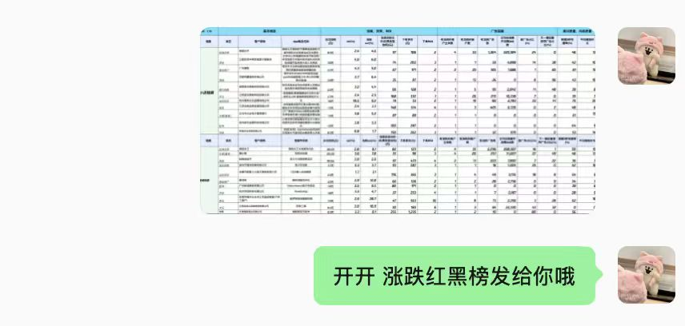 | 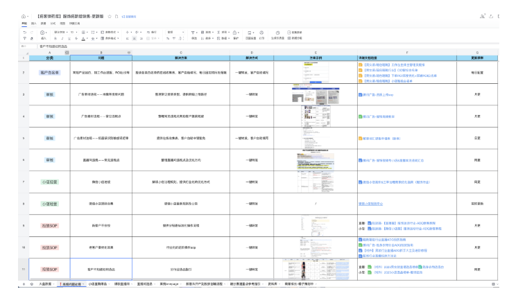 | 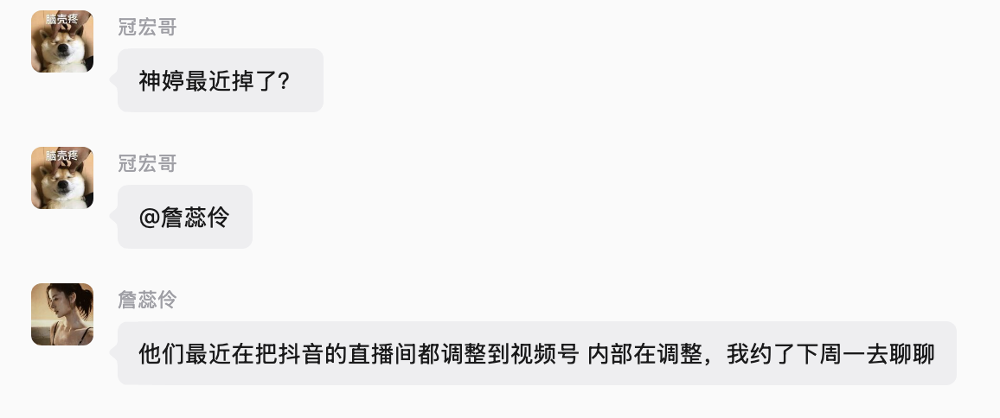 |
| AI 改变了什么 | 人工摸排客户 → 系统识别客户 自动识别生命周期阶段、掉量异常、起量机会，并生成每日优先级任务。 | 经验式服务 → 标准服务包 把客户阶段、问题原因、服务角色、对标指标、解决方案一站式压缩打包。 | 管理者口头确认 → 销售做工可追溯 自动记录处理状态、反馈原因、销售动作和管理侧进度。 |
| After | YTD 识别潜力新手/成长期客户 xx 个 跃迁 xx%，带动消耗 xx 万 | 单客户异动处理耗时 __ 分钟 → __ 分钟，效率提升 __% | 销售人均每日使用时长 xx 任务处理率 xx% |
小红点系统如何把业务规则变成每日动作
01 · DATA
数据接入
客户登记、投放表现、L7D 指标、生命周期等多源数据进入同一看板口径
02 · AI/RULE
规则与 AI 处理
业务规则识别掉/起量和阶段短板，AI 将诊断、对标、建议压缩为可执行任务卡
03 · OPS
部署与迭代
静态网页部署，T-1 数据定期刷新；业务同学小步快走迭代规则、截图和文案。
待办红点
每日开工第一动作
识别头部掉量、潜力起量等异动，销售点开红点拿到诊断包和建议动作；处理后自动留痕。
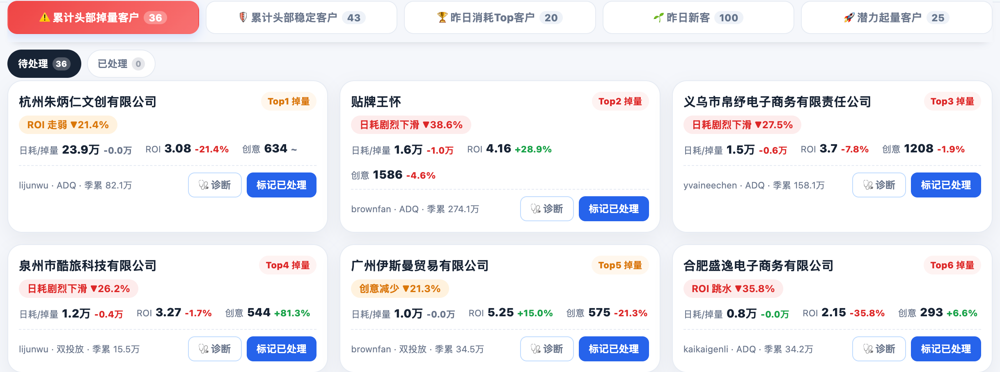
客户生命周期
客户引入后的阶段经营
按首投日期分新手/成长/成熟，匹配服务角色、短板诊断和 Benchmark，对腰尾客户也能下发匹配资源。
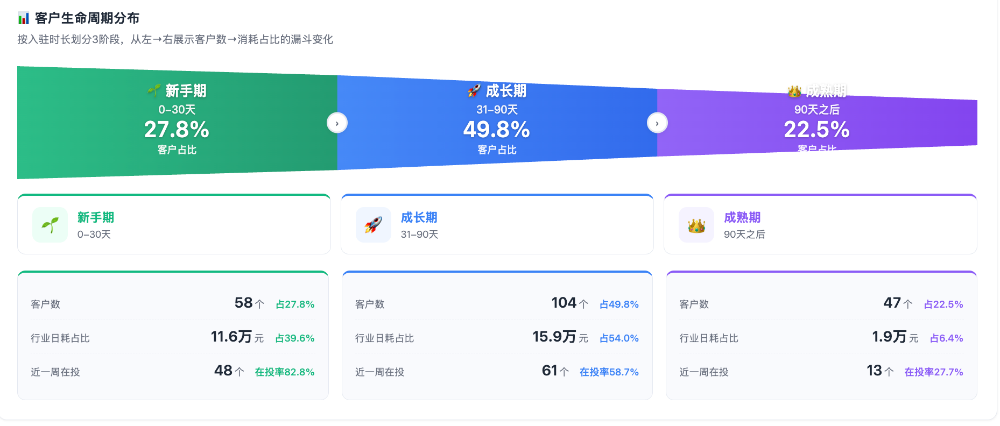
业绩驾驶舱
团队/个人进度全局透视
季度 KPI 门户、7 名销售明细、靶向名单、产业带进展统一口径展示，管理从事后复盘前移到事中调度。
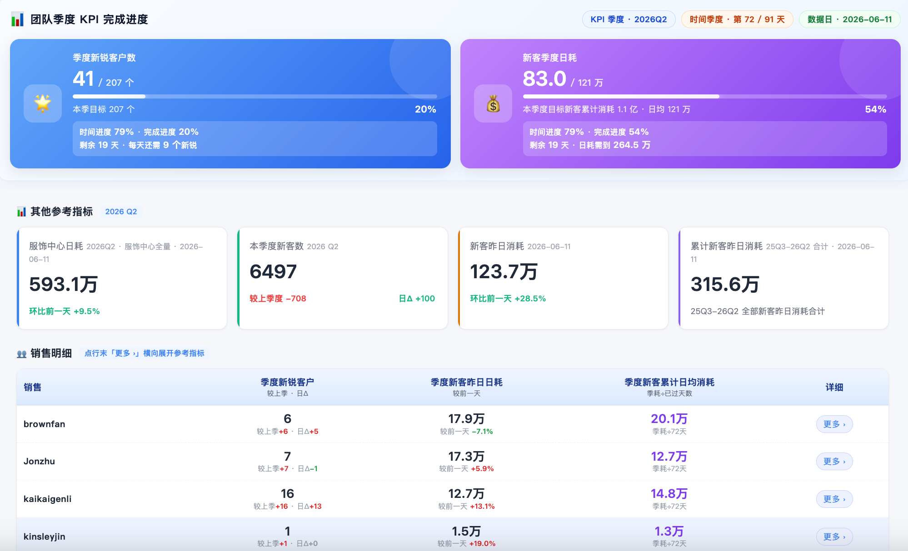
信息同步库
外勤对客随取随用
政策、行业、案例、产品能力四类弹药分区沉淀，统一口径、随手取用，新人也能快速对客。
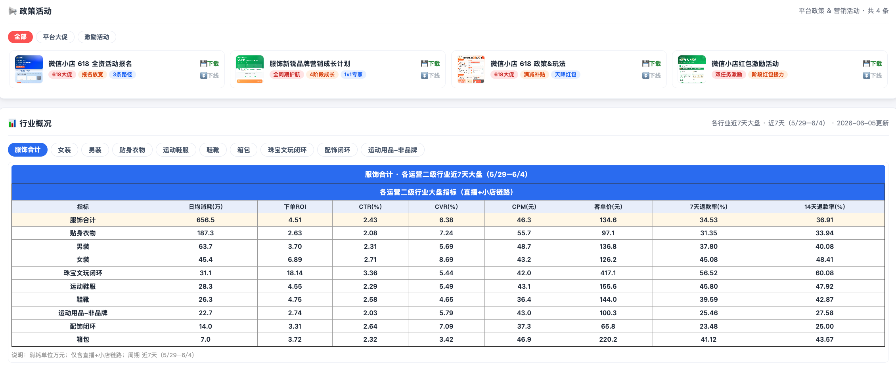
四个场景，覆盖销售从开工到复盘的完整动线
🚀 打开小红点看板Demo 重点不在“功能多”，而在于每个场景都能完成从识别、处理到留痕的闭环。
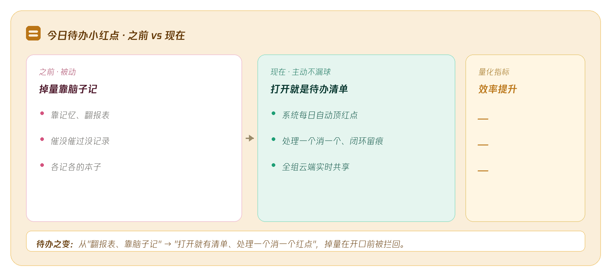
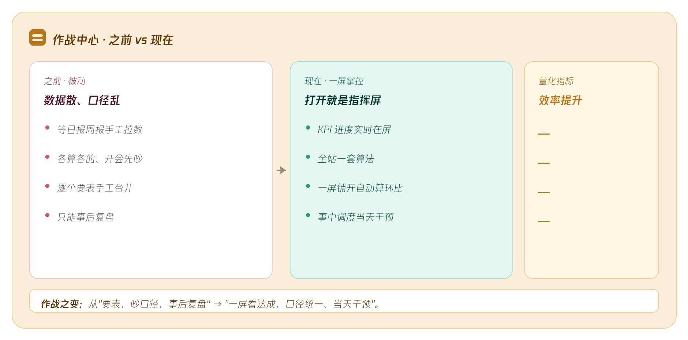
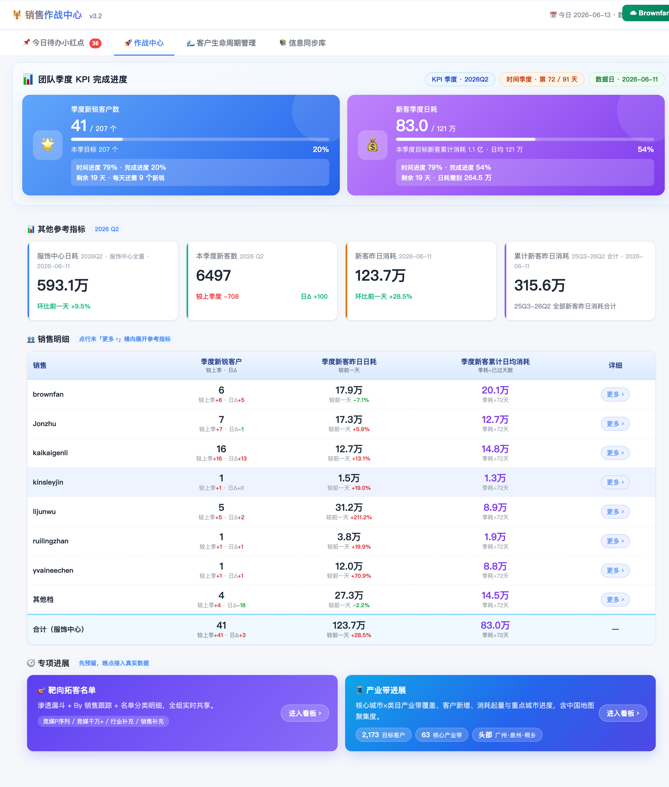
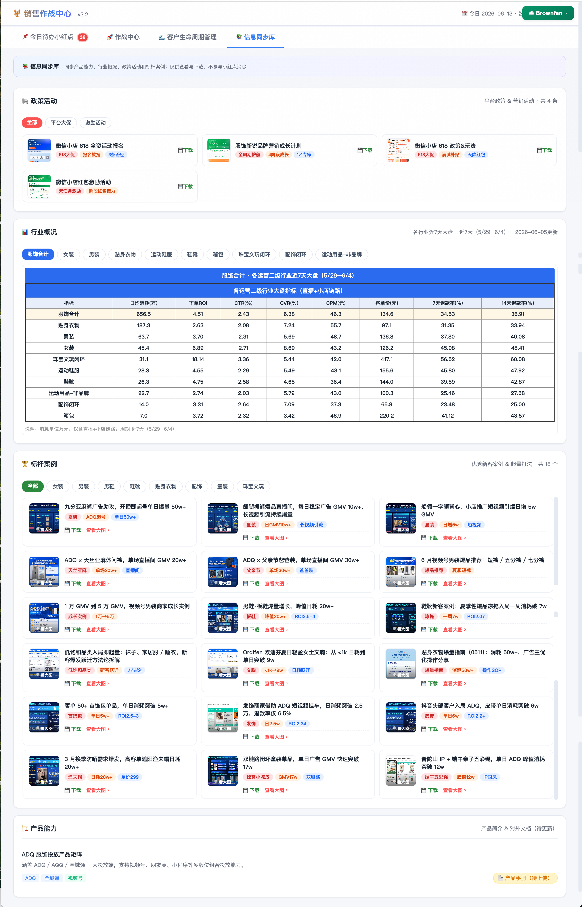
把中长尾客户服务从“统一跟进”升级为“分阶段经营”
先分阶段
按首投日期识别新手期、成长期、成熟期，不同阶段不再一刀切服务。
再看短板
客户卡片沉淀近 7 日日耗、ROI、客单价、基建、创意、链路等核心指标。
最后落到动作
新手看达标线，成长/成熟看同类 Top1 Benchmark，让销售按阶段、按问题、按差距服务。
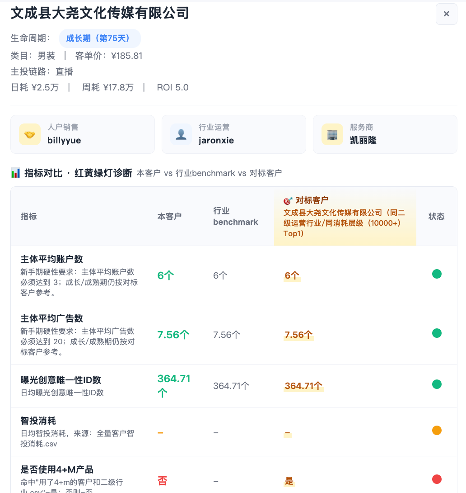
模块价值：客户生命周期系统不是客户列表，而是一张客户经营地图。它让销售不只是知道“这个客户要跟”，而是知道客户处在哪个阶段、谁来服务、差距在哪里、下一步补什么。
小红点不是万能钥匙，下一步是更细、更轻、更稳的人机协同
建议更细
基于客户不同标签、周期、类目，提供更差异化、更深入的客户建议参考。
系统更轻
优化加载速度、运行性能和 token 成本，目标体验更快更稳。
人机协同更清楚
系统解决找客户、看短板、统一口径、动作留痕；客户关系、资源开拓、商务博弈仍由销售完成。
| 销售时段 | 系统能帮什么 | 销售仍然不可替代什么 |
|---|---|---|
| 早晨开工 | 自动识别昨日异动、排优先级 | 判断客户真实意愿、跨部门紧急协调 |
| 上午外勤 | 随手取政策、行业、案例、对标数据 | 信任建立、关系维护、商务谈判 |
| 下午回公司 | 客户阶段分类、短板诊断、责任分工 | 资源协调、经验交流、新拓客思路 |
| 晚上复盘 | KPI 实时进度、分销售进展 | 目标对齐、资源争取、复杂任务处理 |
Closing｜AI 的价值不是替代销售，而是放大销售
它处理海量信息，化被动为主动，规范化销售动作；同时把销售时间留给客户开拓、关系经营和业务判断。